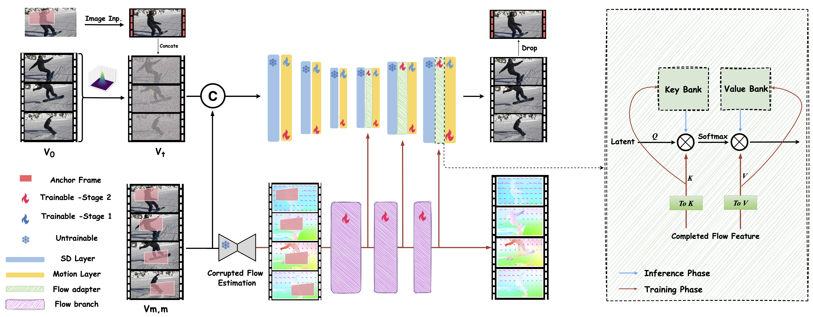

Method Overview

Overview of FloED. FloED employs a dual-branch architecture implemented through a two-stage training approach. In the first training stage, we focus exclusively on the upper branch, optimizing the motion layer to adapt specifically to the video inpainting domain. Subsequently, we introduce a time-agnostic flow branch complemented by a multi-scale flow adapter, which provides flow guidance covering upblocks of primary UNet. During the inference phase, we enhance efficiency by integrating the flow attention cache (right part)